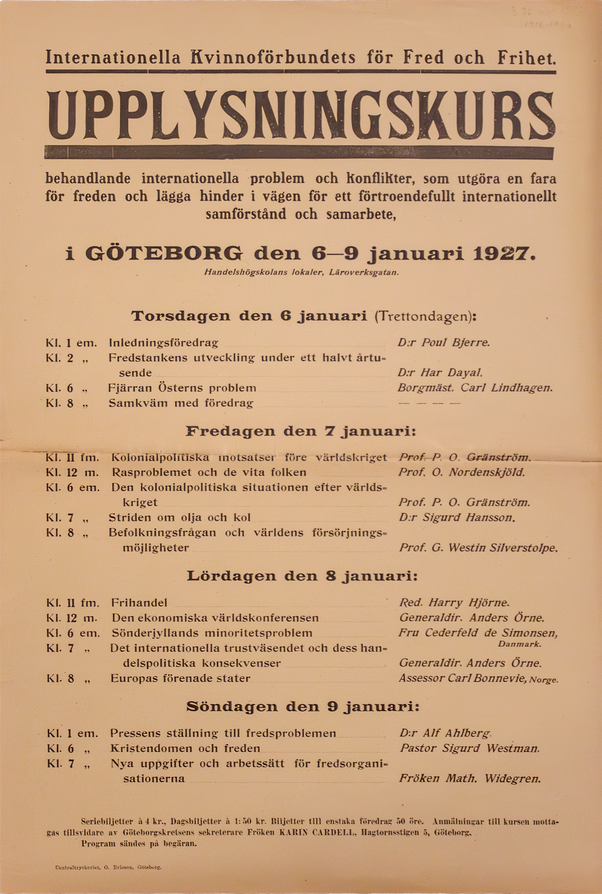

Affisch
Transkribering
Internationella Kvinnoförbundets för Fred och Frihet.
UPPLYSNINGSKURS
behandlande internationella problem och konflikter, som utgöra en fara
för freden och lägga hinder i vägen för ett förtroendefullt internationellt
samförstånd och samarbete,
i GÖTEBORG den 6-9 januari 1927.
Handelshögskolans lokaler, Läroverksgatan.
Torsdagen den 6 januari (Trettondagen):
Kl. 1 em. Inledningsföredrag Dr Poul Bjerre.Kl. 2 „ Fredstankens utveckling under ett halvt årtu-
sende D:r Har Dayal.
Kl. 6 „ Fjärran Österns problem Borgmäst. Carl Lindhagen.
Kl. 8 „ Samkväm med föredrag — — — —
Fredagen den 7 januari:
Kl. 11 fm. Kolonialpolitiska motsatser före världskriget Prof. P. O. Gränström.Kl. 12 m. Rasproblemet och de vita folken Prof. O. Nordenskjöld.
Kl. 6 em. Den kolonialpolitiska situationen efter världs-
kriget Prof. P. O. Gränström.
Kl. 7 „ Striden om olja och kol D:r Sigurd Hansson.
Kl. 8 „ Befolkningsfrågan och världens försörjnings-
möjligheter Prof. G. Westin Silverstolpe.
Lördagen den 8 januari:
Kl. 11 fm. Frihandel Red. Harry Hjörne.Kl. 12 m. Den ekonomiska världskonferensen Generaldir. Anders Örne.
Kl. 6 em. Söderjyllands minioritetsproblem Fru Cederfeld de Simonsen, Danmark.
Kl. 7 „ Det internationella trustväsendet och dess han-
delspolitiska konsekvenser Generaldir. Anders Örne.
Kl. 8 „ Europas förenade stater Assessor Carl Bonnevie, Norge.
Söndagen den 9 januari:
Kl. 1 em. Pressens ställning till fredsproblemen D:r Alf Ahlberg.Kl. 6 „ Kristendomen och freden Pastor Sigurd Westman.
Kl. 7 „ Nya uppgifter och arbetssätt för fredsorgani-
sationerna Fröken Math. Widegren.
Seriebiljetter à 4 kr., Dagsbiljetter à 1:50 kr. Biljetter till enstaka föredrag 50 öre. Anmälningar till kursen motta-
gas tillsvidare av Göteborgskretsens sekreterare Fröken KARIN CARDELL, Hagtornsstigen 5, Göteborg.
Program sändes på begäran.
Centraltryckeriet, O. Ericson, Göteborg.